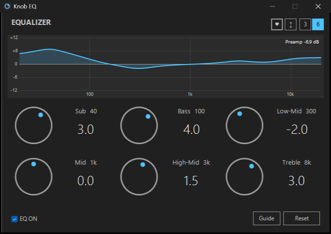
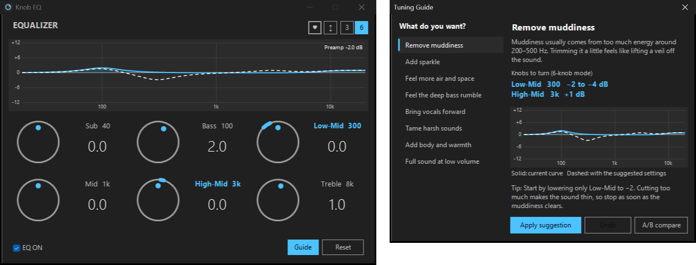
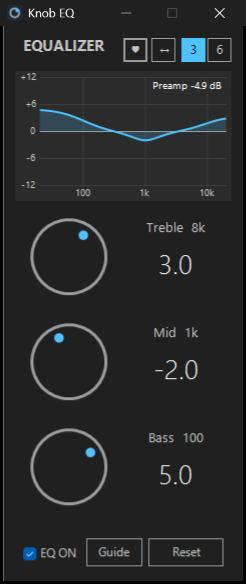
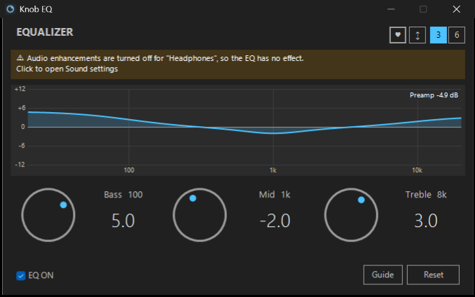

Turn a knob.
Make Windows sound right.
A bit more bass, less muddiness, clearer vocals. KnobEQ is a free app that lets you control Equalizer APO — the popular system-wide equalizer for Windows — with just three (or six) knobs.

Not sure which knob? Just say what you want.
An equalizer can be hard to use when you don't know where to start. Pick a goal in plain words, and KnobEQ shows which knobs to turn and by how much — right on the main window.

The knobs to turn light up, and the suggested curve appears as a dashed line on the graph. "Apply suggestion" sets them in one click, and "Undo" brings everything back.
Features
No numbers to type. Just turn the knobs and trust your ears.
Just turn the knobs
Drag up and down or use the mouse wheel — the sound changes instantly. Double-click to reset to 0.
Goal-based tuning guide
Choose a goal like "Remove muddiness", and KnobEQ shows which knobs to turn and how far.
3 or 6 knobs
A quick 3-knob tone control (bass, mid, treble) or six bands for finer control.
See your curve
A graph shows exactly which frequencies you're boosting or cutting, and by how much.
No clipping
The overall volume is lowered automatically by just the amount you boost (Preamp), so the sound doesn't distort.
Tells you why it isn't working
If a Windows setting keeps the EQ from working, KnobEQ tells you what's wrong and how to fix it.
Little things that make a difference
Made to make your everyday music and videos a bit more enjoyable.
Three knobs to get it right
3-knob mode is just bass, mid and treble — like the tone controls on a hi-fi amplifier. They're tuned to act gently, so even big turns sound natural.
When you want more control, switch to 6-knob mode. Each mode remembers its own settings, so switching back and forth never loses your work.
Vertical and horizontal layouts are available too.

No more "why isn't it working?"
A common reason an equalizer seems to do nothing is that Windows "Audio enhancements" are turned off. KnobEQ checks your current output device and tells you when the EQ can't take effect.
Click the notice to jump straight to the setting that fixes it.

Three steps to get started
KnobEQ works on top of "Equalizer APO", a popular free audio tool for Windows.
-
Install Equalizer APO
Install Equalizer APO (free), and in its Configurator select the headphones and speakers you normally use.
-
Download and run KnobEQ
Right-click the ZIP, choose "Extract All", and double-click
KnobEQ.exe. -
Turn the knobs
The sound changes as you turn. Not sure where to start? Open "Guide" and pick a goal. Your settings stay active even after you close the app.
FAQ
Windows says "Windows protected your PC"
This screen appears for apps from individual developers that aren't widely used yet. It doesn't mean a virus was found. Click "More info", then "Run anyway". The source code is available on GitHub.
Do I need Equalizer APO?
Yes. KnobEQ changes the sound by writing Equalizer APO's configuration file. Equalizer APO is a well-known free tool that applies an equalizer to all audio on Windows.
Can I use it with Peace?
Yes. KnobEQ writes its own file (knobeq.txt) and adds a single line to load it in Equalizer APO's config.txt. It never touches other tools' settings, so you can use Peace for headphone correction and KnobEQ for your personal taste at the same time.
Turning the knobs doesn't change anything
If a notice appears in the app, follow it (clicking it opens the right settings). The most common causes are "Audio enhancements" being turned off for your output device in Windows Settings > System > Sound, and Equalizer APO not being installed for the device you're using. The EQ also has no effect when a music app plays in "exclusive mode".
The volume seems lower
When you boost with the knobs, KnobEQ lowers the overall volume by the same amount to prevent clipping (shown as Preamp on the graph). Just turn up the Windows volume a little.
Is it free?
Yes, completely free with no ads. It's open source under the MIT License, and it never connects to the internet.
Which versions of Windows are supported?
Windows 10 and Windows 11. The required .NET Framework 4.x is built into Windows, so there's nothing else to install.
How do I uninstall it?
Remove the line Include: knobeq.txt from Equalizer APO's config.txt, delete knobeq.txt in the same folder, and delete the KnobEQ folder you extracted.
More
Source code and other apps.
Support the project
KnobEQ is free. If it made your music sound a little better, a coffee helps me keep building new features. Thank you!
☕ Buy me a coffee on Ko-fi